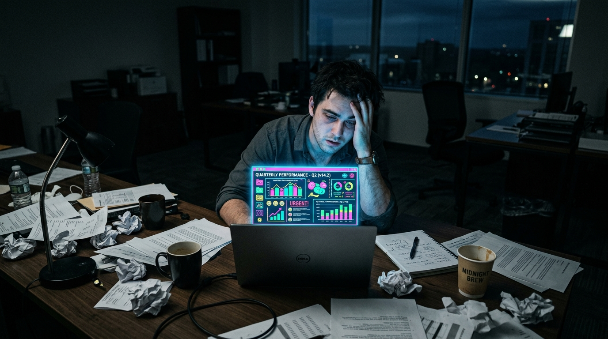
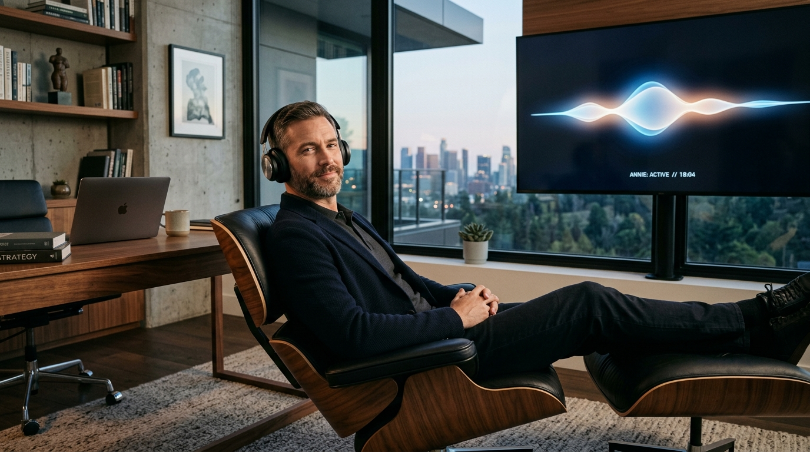
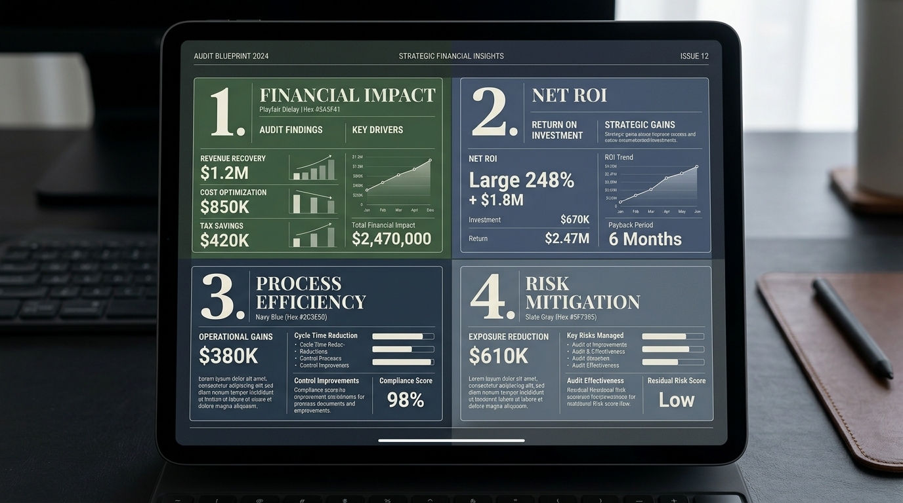

ForeSight OS
The Architect’s Weapon.
You didn’t get into AI consulting to be a glorified transcriber.
Yet, that’s exactly where most consultants find themselves: drowning in raw discovery calls, manually piecing together pain points, and slapping data into cheap, neon SaaS dashboards that scream "amateur."
It is agonizingly difficult to ask a client for a $10,000+ retainer when your deliverables look like they were made in a free trial. You are selling the future of technology, but your operational presence lacks gravity. You feel like a freelancer when you know you should be seen as an authority.

Enter ForeSight OS.
ForeSight OS is not just another project management tool. It is an editorial-grade, AI-driven operating system designed to violently separate you from the commodity consultants. We built ForeSight OS with one obsessive goal: to automate your administrative heavy lifting so you can reclaim your rightful place as the architect of high-level solutions.
Editorial Minimalism
We reject the childish, rounded-corner aesthetic of modern SaaS. To command high-ticket fees, the medium must match the message. ForeSight OS is built on an "Editorial Minimalism" philosophy—a digital homage to high-end business journals.
With deep charcoal ink on off-white parchment, sharp zero-radius corners, and authoritative serif typography, your OS doesn't look like software. It looks like a Fortune 500 boardroom. It projects absolute authority before you even speak.
The Five-Phase Ascension Pipeline
ForeSight OS arms you with the infrastructure of an elite agency, condensed into five seamless motions:
The Command of Attention
Stop guessing where your next retainer is coming from. ForeSight tracks your physical and digital footprint in real-time, pulling leads from Luma, Meetups, and physical outreach into a high-contrast ledger. You know exactly who to strike and when.
The End of the Interrogation
Stop wasting hours on manual discovery calls. Deploy "Annie"—your autonomous voice agent. She conducts the interviews, navigating complex logic trees to extract operational bottlenecks from your prospects. You get to step out of the interrogation room and simply listen to the active transcripts, monitoring tone and nuance like a maestro.

The Alchemist’s Workbench
Let advanced AI (Claude) do the brutal analytical labor. ForeSight digests Annie’s transcripts and instantly isolates the revenue leakage. It spots the dispatcher losing 3 hours a day to manual entry, scores the pain points, and automatically recommends the exact AI stack (Zapier, Bland AI, etc.) required to fix it.
The High-Ticket Justification
This is where data becomes dollars. ForeSight takes raw analysis and packages it into high-fidelity, client-facing blueprints. We categorize everything into four color-coded quadrants of value, explicitly highlighting the Financial Impact—like "$2,450 Monthly Net ROI." With one click, this data exports to Gamma, generating breathtaking pitch decks that make your high-ticket fees an absolute no-brainer.

The Empire Builder
Once the blueprint is sold, ForeSight transitions you into a scaling CEO. Track your monthly closed pipeline value, monitor active builds, and deploy our standardized Upsell Catalog—pitching flagship $3,500+ speed-to-lead agents and $5k custom knowledge systems with zero friction.
ForeSight OS is entirely white-labeled to your brand. With silent background processing, toast notifications, and seamless GoHighLevel syncing, the tech simply disappears, leaving only your expertise.
Stop doing the work of an assistant.
Step into ForeSight OS.
Become the Architect.